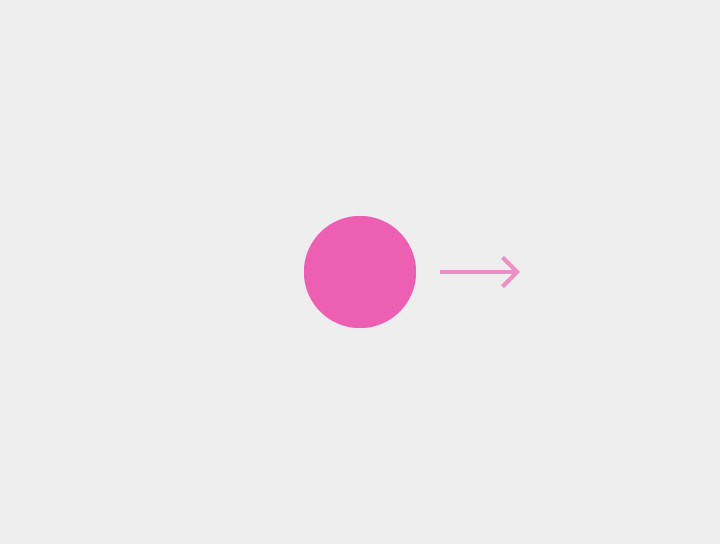

터치 메커니즘은 사용자의 손가락이 화면에서 무엇을 할 지를 나타냅니다.

터치
한 손가락 누르기, 떼기
사용 예: 선택

더블 터치
한 손가락 누르기, 떼기, 한 손가락 누르기, 떼기
사용 예: 확대

드래그, 스와이프 또는 플링
한 손가락 누르기, 이동, 떼기
사용 예: 버리기(Dismiss), 스크롤, 틸트 등

롱 프레스
한 손가락 누르기, 기다리기, 떼기
사용 예: 리스트 아이템과 같은 요소를 선택
롱 프레스는 상황에 맞는 메뉴(Contextual Menu)를 표시하기 위해 사용되지 않습니다.
롱 프레스 드래그
한 손가락 누르기, 기다리기, 이동, 떼기
사용 예: 집어서 이동, 여러 아이템 선택

더블 터치 드래그
한 손가락 누르기, 떼기, 한 손가락 누르기, 이동, 떼기
사용 예: 확대, 축소

핀치 오픈
두 손가락 누르기, 바깥쪽으로 이동, 떼기
사용 예: 확대

핀치 클로즈
두 손가락 누르기, 안쪽으로 이동, 떼기
사용 예: 축소

두 손가락 터치
두 손가락 누르기, 떼기
사용 예: 축소

두 손가락 스와이프, 드래그, 플링
두 손가락 누르기, 이동, 떼기
사용 예: 여러 아이템 선택하기, 팬(Pan), 틸트

두 손가락 롱 프레스
두 손가락 누르기, 기다리기, 떼기
사용 예: 없음; 이 제스처는 흔하지 않습니다.

두 손가락 롱 프레스 드래그
두 손가락 누르기, 기다리기, 이동, 떼기
사용 예: 집어서 이동

두 손가락 더블 터치
두 손가락 누르기, 떼기, 두 손가락 누르기, 떼기
사용 예: 축소

로테이트
두 손가락 누르기, 중심점을 기준으로 양 손가락을 동시에 회전, 떼기
사용 예: 지도에서와 같이 내용물을 회전하기